heat
The heat class simulates optical excitation by heating the sample and heat diffusion on a 1D sample structure.
Copyright (c) 2013, Daniel Schick, André Bojahr, Marc Herzog, Roman Shayduk, Clemens von Korff Schmising All rights reserved.
License: BSD (use/copy/change/redistribute on own risk, mention the authors)
Contents
Classdef
Each heat instance and all inherited class objects follow handle semantics. Hence a copy of such object will not copy the object itself, but only a handle to that object.
classdef heat < simulation
Properties
properties (SetAccess=public,GetAccess=public)
heatDiffusion = false; % BOOLEAN is true when including heat diffusion in the calculations
intpAtInterface = 11; % INTEGER number of additional spacial points at the interface
% of different materials in the heat diffusion simulation
distances = []; % FLOAT vector of distances where to calc heat diffusion. If not set
% heat diffusion is calculated at each unit cell location
odeOptions = struct(); % struct with options for the pdepe solver, see odeset, used for heat diffusion.
boundaryConditions = struct(...
'leftType' , 1 ,... % STRUCT of the left and right type of the boundary conditions for the
'leftValue' , [],... % heat diffusion calculation - 1: isolator - 2: temperature - 3: flux
'rightType' , 1 ,... % For the last two cases the corresponding value has to be set as Kx1
'rightValue', []); % vector, where K is the number of sub-systems
end%properties
Methods
methods
Constructor
Is executed each time an instance of this class is created. Only the structure input is obligatory.
function obj = heat(structure,forceRecalc,varargin) obj = obj@simulation(structure,forceRecalc,varargin{3:end}); % initialize input parser and define defaults and validators p = inputParser; p.KeepUnmatched = true; p.addOptional('heatDiffusion' , false, @islogical); p.addParamValue('intpAtInterface', 11, @isinteger); % parse the input p.parse(varargin{:}); % assign parser results to object properties obj.heatDiffusion = p.Results.heatDiffusion; obj.intpAtInterface = p.Results.intpAtInterface; % set default ode options after initialization of parent class obj.odeOptions.RelTol = 1e-3; end%function
Display
This method is called to display informations of the instance.
function disp(obj) disp('Heat simulation properties:'); disp(['heat diffusion : ' bool2str(obj.heatDiffusion)]); disp(['interpolate at interfaces : ' num2str(obj.intpAtInterface)]); if isempty(obj.distances) disp('no distance mesh is set for heat diffusion calculations.'); else disp('a distance mesh is set for heat diffusion calculations.'); end disp('ode options :'); disp(obj.odeOptions); boundaryTypes = {'isolator', 'temperature', 'flux'}; disp(['left boundary type : ' boundaryTypes{obj.boundaryConditions.leftType}]); if obj.boundaryConditions.leftType == 2 disp(['left boundary temperature [K] : ' num2str(obj.boundaryConditions.leftValue)]); elseif obj.boundaryConditions.leftType == 3 disp(['left boundary flux [W/m^2] : ' num2str(obj.boundaryConditions.leftValue)]); end%if disp(['right boundary type : ' boundaryTypes{obj.boundaryConditions.rightType}]); if obj.boundaryConditions.rightType == 2 disp(['right boundary temperature [K] : ' num2str(obj.boundaryConditions.rightValue)]); elseif obj.boundaryConditions.rightType == 3 disp(['right boundary flux [W/m^2] : ' num2str(obj.boundaryConditions.rightValue) 'W/m^2']); end%if % call the parent display method disp@simulation(obj); end%function
getHash
Returns a unique hash for all heat simulation parameters.
function hash = getHash(obj,time,excitation,initTemp) % S.getHash('heat') % hash of the structure only with heat % spicific parameters hash = [obj.S.getHash('heat') '_' dataHash({obj.heatDiffusion obj.intpAtInterface obj.distances time excitation initTemp})]; end%function
setBoundaryCondition
Set the boundary conditions
function setBoundaryCondition(obj,varargin) p = inputParser; p.KeepUnmatched = true; p.addParamValue('side' , 'left' , @(x)(ischar(x) & find(strcmp(x,{'left', 'right'})))); p.addParamValue('type' , 'isolator', @(x)(ischar(x) & find(strcmp(x,{'isolator', 'temperature', 'flux'})))); p.addOptional('value' , 0 , @isnumeric); % parse the input p.parse(varargin{:}); side = p.Results.side; value = p.Results.value; switch p.Results.type case 'temperature' type = 2; case 'flux' type = 3; otherwise % isolator type = 1; end%switch K = obj.S.numSubSystems; % nb of subsystems if ~strcmp(type,'isolator') && length(value) ~= K error('Non-isolating boundary conditions must have the same dimensionality as the numer of sub-systems K!'); end%if if strcmp(side,'left') obj.boundaryConditions.leftType = type; obj.boundaryConditions.leftValue = value; else obj.boundaryConditions.rightType = type; obj.boundaryConditions.rightValue = value; end%if end%function
checkInitialTemperature
An inital temperature for a heat simulation can be either a single temperature which is assumed to be valid for all unitCells in the structure or a temeprature profile vector is given with one temperature for each unitCell in the structure and for each subsystem.
function initTemp = checkInitialTemperature(obj,initTemp) N = obj.S.getNumberOfUnitCells; % nb of unit cells K = obj.S.numSubSystems; % nb of subsystems % transpose the init temp if we have just one subsystem if K == 1 && size(initTemp,1) ~= N initTemp = initTemp'; end % check size of initTemp if numel(initTemp) == 1 % it is the same initial temperature for all unitCells initTemp = initTemp*ones(N,K); elseif ~isequal(size(initTemp),[N K]) % initTemp is a vector but has not as many elements as unitCells error('The initial temperature vector must have 1 or NxK elements, where N is the number of unitCells in the sample and K the number of subsystems!'); end end%function
checkExcitation
The optical excitation is a 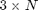 matrix with a fluence 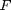 [J/m^2], time 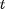 [s] of the pump event, and pulse width 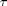 [s].  is the number of pump events.
is the number of pump events.
function [res fluence timePump pulseWidth] = checkExcitation(obj,excitation,time) % check the size of excitation, if we have a multipulse excitation if isequal(size(excitation),[1 1]) % we have just a fluence and no timePump or pulseWidth fluence = excitation; timePump = 0; % so we define that the exciation is at t=0 pulseWidth = 0; % pulse width is 0 by default elseif size(excitation,1) == 2 fluence = excitation(1,:); % set the fluences timePump = excitation(2,:); % set the times pulseWidth = zeros(1,size(excitation,2)); % set the pulse width to 0 by default else fluence = excitation(1,:); % set the fluences timePump = excitation(2,:); % set the times pulseWidth = excitation(3,:); % set the pulse width end % check the elements of the timePump vector if length(timePump) < length(sort(unique(timePump))) error('The excitations have to unique in time!'); else timePump = sort(unique(timePump)); end % throw warnings if heat diffusion should be enabled if obj.S.numSubSystems > 1 && ~obj.heatDiffusion warning('If you are introducing more than 1 subsystem you should enable heat diffusion!'); end if sum(pulseWidth) > 0 && ~obj.heatDiffusion pulseWidth(:) = 0; warning('The effect of finite pulse duration of the excitation is only considered if heat diffusion is enabled! All pulse durations set to 0!'); end
traverse excitation vector to update the timePump 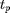 vector for finite pulse durations 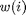 as follows
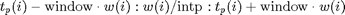
and to combine excitations which have overlapping intervalls
nExcitation = {}; % the result of the traversed excitation is a cell vector
window = 1.5; % window factor for finite pulse duration
intp = 1000; % interpolation factor for finite pulse duration
i = 1; % start counter
while i <=length(timePump)
k = i;
temp = [];
% check all upcoming excitations if they overlap with the
% current
while k <= length(timePump)
temp = vertcat(temp,[timePump(k), pulseWidth(k), fluence(k)]);
if k < length(timePump) && (timePump(k)+window*pulseWidth(k)) >= (timePump(k+1)-window*pulseWidth(k+1))
% there is an overlap in time so add the next
% excitation to the current element
k = k+1;
if pulseWidth(k) == 0
% an overlapping pulse cannot have a pulseWidth
% of 0! Throw an error!
error('Overlapping pulse must have duration > 0!');
end%if
else
% no overlap, so go to the next iteration of the
% outer while loop
break;
end%if
end%while
% caclulate the new time vector of the current excitation
intervall = (timePump(i)-window*pulseWidth(i)):(min(pulseWidth(i:k))/intp):(timePump(k)+window*pulseWidth(k));
if isempty(intervall)
% its pulseWidth = 0 or no heat diffusion was enabled
% so we calculate just at a single time step
intervall = timePump(i);
end
% update the new excitation cell array
nExcitation(:,end+1) = {intervall, temp(:,1), temp(:,2), temp(:,3)};
i = k+1; % increase counter
end%while
% traverse the nExcitation cell array and add additional time
% vectors between the pump events for the later temperature
% calculation
res = {}; % initialize the result cell array
% check for time < timePump(1)
if ~isempty(time(time < nExcitation{1,1}(1)))
res = {time(time < nExcitation{1,1}(1)); []; []; []};
elseif isempty(time(time <= nExcitation{1,1}(1)))
warning('Please add more time steps before the first excitation!');
end%if
% traverse nExcitation
for i = 1:size(nExcitation,2)
clear temp;
res = cat(2,res,nExcitation(:,i));
if i+1 <= size(nExcitation,2)
% there is an upcoming pump event
if ~isempty(time(time > nExcitation{1,i}(end) & time < nExcitation{1,i+1}(1)))
% there are times between the current and next
% excitation
temp = {time(time > nExcitation{1,i}(end) & time < nExcitation{1,i+1}(1)); []; []; []};
res = cat(2,res,temp);
end%if
else % this is the last pump event
if ~isempty(time(time > nExcitation{1,i}(end)))
% there are times after the current last excitation
temp = {time(time > nExcitation{1,i}(end)); []; []; []};
res = cat(2,res,temp);
end%if
end%if
end%for
end%function
getAbsorptionProfile
Returns a vector of the absorption profile derived from Lambert-Beer's law. The transmission is given by:
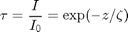
and the absorption by:

The absorption profile can be derived from the spatial derivative:
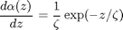
function dAlphadz = getAbsorptionProfile(obj,dists) if nargin < 2 % if no distances are set, we calculate the Extinction on % the middle of each unit cell [dStart, ~, dists] = obj.S.getDistancesOfUnitCells(); else dStart = obj.S.getDistancesOfUnitCells(); end dInterfaces = obj.S.getDistancesOfInterfaces(); % the interfaces N = length(dists); % nb of distances dAlphadz = zeros(N,1); % initialize relative absorbed energies I0 = 1; % initial intensity k = 1; % counter for first unit cell in layer for i = 2:length(dInterfaces) % find the first unitCell of the layer and get properties index = finderb(dInterfaces(i-1),dStart); UC = obj.S.getUnitCellHandle(index); optPenDepth = UC.optPenDepth; % get all distances in the current layer we have to % calculate the absorption profile for if i == length(dInterfaces) % last layer z = dists(dists >= dInterfaces(i-1) & dists <= dInterfaces(i)); else z = dists(dists >= dInterfaces(i-1) & dists < dInterfaces(i)); end m = length(z)-1; if ~isinf(optPenDepth) % the layer is absorbing dAlphadz(k:k+m) = I0/optPenDepth*exp(-(z-dInterfaces(i-1))/optPenDepth); % calculate the remaining intensity for the next layer I0 = I0*exp(-(dInterfaces(i)-dInterfaces(i-1))/optPenDepth); end k = k+m+1; % set the counter end end%function
getTemperatureAfterDeltaExcitation
Returns a vector of the end temperature and temperature change for each unitCell of the sample structure after an optical exciation with a fluence [J/m^2] and an inital temperature 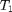 [K]:
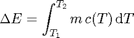
where 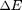 is the absorbed energy in each unit cell and 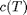 is the temperature-dependent heat capacity [J/kg K] and 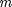 is the mass [kg].
The absorbed energy per unit cell can be linearized from the absorption profile 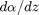 as

where 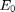 is the initial energy impinging on the first unit cell given by the fluence 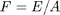. 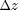 is equal to the 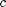-axis of each unit cell.
Finally, one has to minimize the following modulus to obtain the final temperature 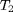 of each unit cell:
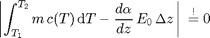
function [finalTemp deltaT] = getTemperatureAfterDeltaExcitation(obj,fluence,initTemp) % initialize tic N = obj.S.getNumberOfUnitCells; % nb of unit cells dAlphadz = obj.getAbsorptionProfile(); % absorption profile from Lambert-Beer's law intHeatCapacity = obj.S.getUnitCellPropertyVector('intHeatCapacity'); cAxises = obj.S.getUnitCellPropertyVector('cAxis'); masses = obj.S.getUnitCellPropertyVector('mass'); areas = obj.S.getUnitCellPropertyVector('area'); E0 = fluence*areas(1); initTemp = obj.checkInitialTemperature(initTemp); % check the intial temperature finalTemp = initTemp; % traverse unitCells for i = 1:N if dAlphadz(i) > 0 % if there is absorption in the current unit cell delE = dAlphadz(i)*E0*cAxises(i); fun = @(finalTemp)(abs(masses(i)*(intHeatCapacity{i,1}(finalTemp) ... - intHeatCapacity{i,1}(initTemp(i)))-delE)); finalTemp(i,1) = fminbnd(fun,initTemp(i,1),1e5); end end%for deltaT = finalTemp - initTemp; % this is the temperature change obj.dispMessage('Elapsed time for _temperatureAfterDeltaExcitation_:',toc); end%function
getTempMap
Returns a tempperature profile for the sample structure after optical excitation.
function [tempMap deltaTempMap checkedEx] = getTempMap(obj,time,excitation,initTemp) % create a unique hash hash = obj.getHash(time,excitation,initTemp); % create the file name to look for filename = fullfile(obj.cacheDir, ['tempMap_' hash '.mat']); if exist(filename,'file') && ~obj.forceRecalc % file exists so load it load(filename); obj.dispMessage(['_tempMap_ loaded from file ' filename]); else % file does not exist so calculate and save [tempMap deltaTempMap checkedEx] = obj.calcTempMap(time, excitation, initTemp); save(filename,'tempMap', 'deltaTempMap', 'checkedEx'); obj.dispMessage(['_tempMap_ saved to file ' filename]); end end%function
calcTempMap
Calculates the tempMap and tempMap difference for a given time vector, exciation and initial temperature. Heat diffusion can be included if heatDiffusion = true.
function [tempMap deltaTempMap checkedEx] = calcTempMap(obj,time,excitation,initTemp) t1 = tic; % initialize N = obj.S.getNumberOfUnitCells; % nb of unit cells K = obj.S.numSubSystems; % nb of sub systems tempMap = zeros(1,N,K); % we have an initial time step for the initTemp - we will remove it later on initTemp = obj.checkInitialTemperature(initTemp); % check the intial temperature checkedEx = obj.checkExcitation(excitation,time); % check excitation tempMap(1,:,:) = initTemp; % this is initial temperature before the simulation starts numEx = 1; % excitation counter % traverse excitations for i=1:size(checkedEx,2) clear temp; % reset inital temperature for delta excitation with heat diffusion enabled specialInitTemp = []; % extract excitation parameters for the current iteration subTime = checkedEx{1,i}; timePump = checkedEx{2,i}; pulseWidth = checkedEx{3,i}; fluence = checkedEx{4,i}; if obj.heatDiffusion && length(subTime) > 2 && (sum(fluence) == 0 || (sum(fluence) > 0 && sum(pulseWidth) > 0)) % heat diffusion enabled and more than 2 time steps AND % either no excitation or excitation with finite pulse % duration if sum(fluence) == 0 obj.dispMessage('Calculating _heatDiffusion_ ...'); else obj.dispMessage(['Calculating _heatDiffusion_ for excitation ' num2str(numEx:(numEx+length(fluence)-1)) ' ...']); end start = 1; stop = 0; if i-1 > 0 % check if there was a intervall before and add % last time of this intervall to the current subTime = [checkedEx{1,i-1}(end) subTime]; start = 2; end if i < size(checkedEx,2) && sum(checkedEx{4,i+1}) > 0 && sum(checkedEx{3,i+1}) == 0 % there is a next intervall of delta excitation so % we add this time at the end of the current % intervall subTime = [subTime checkedEx{1,i+1}(1)]; stop = 1; end % calc heat diffusion temp = obj.calcHeatDiffusion(initTemp,subTime,timePump,pulseWidth,fluence); if stop == 1 % there is an upcomming delta excitation so we have % to set the initial temperature for this next % intervall seperately specialInitTemp = squeeze(temp(end,:,:)); end % cut the before added time steps temp = temp(start:end-stop,:,:); elseif sum(fluence) > 0 && (~obj.heatDiffusion || (obj.heatDiffusion && sum(pulseWidth) == 0)) % excitation with no heat diffusion -> only % delta excitation possible in this case % OR excitation with heat diffusion and pulseWidth % equal to 0 temp = obj.getTemperatureAfterDeltaExcitation(fluence,initTemp); temp = reshape(temp,1,size(temp,1),size(temp,2)); else % no excitation and no heat diffusion or not enough time % step to calculate heat difusion, so just repeat the % initial temperature + every unhandled case temp = repmat(reshape(initTemp,1,N,K),[length(subTime) 1 1]); end % concat results tempMap = vertcat(tempMap,temp); % set the initial temperature for the next iteration if ~isempty(specialInitTemp) initTemp = specialInitTemp; else initTemp = squeeze(tempMap(end,:,:)); end % increase excitation counder if sum(fluence) > 0 numEx = numEx+length(fluence); end%if end%for if ~isequal([checkedEx{1,:}],time) % if the time grid for the calculation is not the same as % the grid to return the results on. Then extrapolate the % results on the original time vector but keep the first % element in time for the deltaTempMap calculation. [X,Y] = meshgrid([checkedEx{1,:}],1:N); [XI,YI] = meshgrid(time,1:N); temp = tempMap; tempMap = zeros(length(time)+1,N,K); for i = 1:K tempMap(:,:,i) = vertcat(temp(1,:,i), interp2(X,Y,temp(2:end,:,i)',XI,YI)'); end end % calculate the difference temperature map deltaTempMap = diff(tempMap);% tempMap(2:M+1,:)-tempMap(1:M,:); % delete the initial temperature that was added at the beginning tempMap(1,:,:) = []; obj.dispMessage('Elapsed time for _tempMap_:',toc(t1)); end%function
calcHeatDiffusion
Returns a tempMap that is calculated by heat diffusion for a given time vector and initial temperature profile. Here we have to solve the 1D heat equation:

where 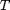 is the temperature [K], 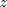 the distance [m], the time [s], the temperature dependent heat capacity [J/kg K], 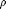 the density [kg/m^3] and 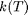 is the temperature- dependent thermal conductivity [W/m K] and 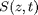 is a source term [W/m^3].
function tempMap = calcHeatDiffusion(obj,initTemp,time,timePump,pulseWidth,fluence) tic K = obj.S.numSubSystems; % nb of sub systems initTemp = obj.checkInitialTemperature(initTemp); % check the initial temperature [dStart, ~, dMid] = obj.S.getDistancesOfUnitCells(); % get the distances of each unitCell [~,~,handles] = obj.S.getUnitCellVectors(); % get the handles to all unitCells if isempty(obj.distances) % no user-defined distaces are given, so calculate heat % diffusion by unit cell and also interpolate at the % interfaces dists = obj.S.interpDistanceAtInterfaces(obj.intpAtInterface); else % a user-defined distances vector is given, so determine % the indicies for final assignment per unitcell dists = obj.distances; end % This is the initial condition function that is necessary to % solve the heat equation with the pde solver, it returns the % initial temperature at each distance z. ic = @(z)(initTemp(finderb(z,dStart),:)'); % Here we let the pde solver of matlab solve the differential % equation with the inital condition _ic_, the boundary % condition _obj.pdeBoundaryConditions()_ and the pde function % _obj.pdeHeatEquation()_. if ~isempty(fluence) && sum(pulseWidth) > 0 source = obj.generateSource(fluence,timePump,pulseWidth,dists); else source = []; end temp = pdepe(0,@(z,t,T,dTdz)(obj.pdeHeatEquation(z,t,T,dTdz,source,dStart,handles)),... ic,@obj.pdeBoundaryConditions,dists,time,odeset(obj.odeOptions)); % interpolate the results from the given distance vector on the % center of each unit cell (dMid) for each subsystem. [X,Y] = meshgrid(time,dists); [XI,YI] = meshgrid(time,dMid); tempMap = zeros(length(time),length(dMid),K); for i = 1:K tempMap(:,:,i) = interp2(X,Y,temp(:,:,i)',XI,YI)'; end if isempty(fluence) obj.dispMessage('Elapsed time for _heatDiffusion_:',toc); else obj.dispMessage(['Elapsed time for _heatDiffusion_ with ' num2str(length(fluence)) ' excitation(s):'],toc); end end
generateSource
Generate function handle of gaussians in time and absorption profile (Lambert-Beer' law) in space for use as a source term in heat diffusion pdepe. The source term is engery per second and volume [W/m^3]:

with 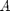 as unit cell area. For a Gaussian temporal profile we can substitute:
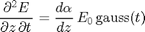
where 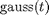 is a normalized Gaussian function. Thus we get:
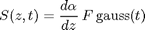
with as fluence [J/m^2].
function source = generateSource(obj,fluence,timePump,pulseWidth,dists) dAlphadz = obj.getAbsorptionProfile(dists); source = @(t,z)(dAlphadz(finderb(z,dists))*mgauss(t,pulseWidth,timePump,fluence,'widthType','FWHM','normalize',true)); end
pdeHeatEquation
This is the definition of the differential heat equation that is solved by matlab's pde solver. In addition to 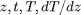, we hand the vector of distances and handles to all unitCells to the function to save CPU time. matlab solves the following equation:
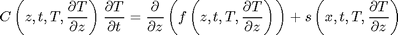
which translates as following for the 1D heat equation:
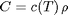
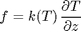
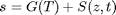
where 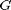 is the subsystem-coupling-term and 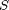 is the external source term. The units used in the simulation are SI [W/m^3].
function [C,f,s] = pdeHeatEquation(obj,z,t,T,dTdz,source,dStart,handles,varargin) % find the first unitCell that is close to the current z % position that is given by the solver persistent K; if isempty(K) K = obj.S.numSubSystems; end index = finderb(z,dStart); unitCell = handles{index}; % this is the handle to the corresponding unitCell k = cellfun(@feval,(unitCell.thermCond)',num2cell(T)); % these are the parameters of the differential equation as they % are defined in matlab for the pdesolver vecSource = zeros(K,1); if isa(source,'function_handle') vecSource(1) = source(t,z); end C = cellfun(@feval,(unitCell.heatCapacity)',num2cell(T)).*unitCell.density; f = k.*dTdz; s = cellfun(@feval,(unitCell.subSystemCoupling)',repmat({T},K,1))+vecSource; end%function
pdeBoundaryConditions
This is the boundary condition function as it is required by the pde solver. For the left and right side the following equation has to be fulfilled:
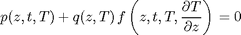
function [pl,ql,pr,qr] = pdeBoundaryConditions(obj,zl,Tl,zr,Tr,t,varargin) persistent dim; if isempty(dim) dim = [obj.S.numSubSystems,1]; end % check the type of the left boundary condition switch obj.boundaryConditions.leftType case 2 % temperature pl = Tl - obj.boundaryConditions.leftValue; ql = zeros(dim); case 3 % flux pl = obj.boundaryConditions.leftValue; ql = ones(dim); otherwise % isolator pl = zeros(dim); ql = ones(size(dim)); end%switch % check the type of the right boundary condition switch obj.boundaryConditions.rightType case 2 % temperature pr = Tr - obj.boundaryConditions.rightValue; qr = zeros(dim); case 3 % flux pr = -obj.boundaryConditions.rightValue; qr = ones(dim); otherwise % isolator pr = zeros(dim); qr = ones(size(dim)); end%switch end%function
end%methods
end%classdef